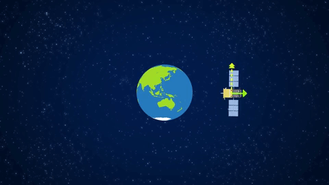

I’m a GIS, Remote Sensing, and Earth Observation expert with strong experience in spatial analysis, geospatial programming, and machine learning. My work focuses on extracting meaningful patterns from satellite imagery, spatial datasets, and geospatial models to support decision-making across environmental, urban, and land-use applications.